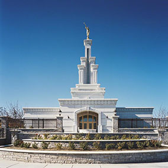

Join us at the Temple Inn and Suites!
The Temple Inn & Suites is a hotel chain headquartered in Bethesda, MD that builds and manages specialized hotel accommodations near temple locations of The Church of Jesus Christ of Latter-day Saints around the world.
We cater to temple workers, patrons, and their families by providing specialized services and accommodations that meet the needs of those patrons. Our hotel accommodations and services are available to anyone willing to abide by the terms and policies outlined. (see here)
We offer specialized services to meet the needs of temple patrons who come to serve in the temple or who participate in events such as sealings, weddings, receptions, and youth trips.
We strive to assist in making your trip to the temple worry free. We want you to have a special stay on your most special days.
Make your Reservation Now!

The Columbia River Washington Temple is the 107th operating temple of The Church of Jesus Christ of Latter-day Saints (LDS Church).
The Columbia River Washington Temple, located in Richland near Badger Mountain, is the third temple in the state of Washington, following the Seattle Washington and Spokane Washington temples. Church membership in Washington has grown from 67,000 members in 1970 to nearly 230,000 in 2001. Because of the tremendous growth church leaders felt another temple should be built within the state. The Columbia River Temple serves 32,000 members in eastern Washington and northern Oregon.
Some parts of the temple foundation includes 2-inch river rock used as fill in concrete forms. During construction of the temple, people were allowed access to open bins of this river rock at the edge of the construction site. Many people wrote names of children, loved ones, etc. on the rocks that were later incorporated into the building itself.
(Wikipedia)